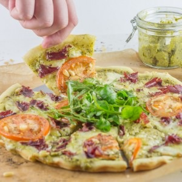

Pizza mozzarella pesto

Aujourd’hui c’est la reprise pour moi! La reprise du boulot, la reprise du quotidien et surtout la reprise du blog et de la création de pleins de nouvelles recettes!
A chaque retour de vacances je vous avoue que l’envie de cuisiner n’est pas vraiment au rendez-vous! Entre les valises à déballer, les courses à faire, les heures de sommeils à récupérer, préparer un bon plat n’est clairement pas ma priorité (et faire de belles photos aussi en témoigne celle-ci^^). En été dans ce genre de situation (que je pense ne pas être la seule à rencontrer) une bonne pizza est clairement la bienvenue. En tant que fana de pesto et de mozzarella j’ai donc décidé de préparer une bonne pizza mozzarella pesto à laquelle j’ai ajouté des tomates et de la viande de grisons et nous nous sommes vraiment régalés. Comme vous pouvez le voir sur ma photo j’adore ajouter un peu de salade sur le dessus de mes pizzas et pour cette fois là j’avais un peu de mâche sous la main que j’ai ensuite arrosé d’un filet de vinaigre balsamique et le tour fut joué!!! Je n’avais ni crème fraîche, ni sauce tomate (et une grosse flemme de retourner aux courses) alors j’ai testé le pesto directement comme base à ma pizza et si je la poste aujourd’hui c’est que ce fut une réussite! Je pense que vous pouvez remplacer la mozzarella par du gruyère râpé même si personnellement je ne suis pas une grande adepte du fromage râpé sur les pizzas et que je préfère de loin la mozzarella mais tout est une question de goût alors pourquoi pas. Cette pizza mozzarella pesto a prolongé nos vacances un court instant, il va maintenant falloir vite se remettre dans le bain puis attendre et planifier les prochaines vacances. Je vous laisse avec la recette pendant que moi je retourne à mes valises 😉 et pour ceux qui sont comme nous et qui adorent le pesto, je vous ai mis la recette ICI ainsi que des bruschettas ICI qui, je le pense devraient vous plaire aussi.
Ingrédients
- Pâte à pizza
- Pesto - 3 càs
- Viande de grison - 4 fines tranches
- Tomate - 1 belle tomate
- Mozzarella - 125g
- Pignons de pins (facultatif) - 1 petite poignée
Instructions
- Étaler votre pâte à pizza
- Préchauffer le four à 180°
- Tartiner la pâte à pizza de pesto
- Couper la mozzarella en dés
- Déposer la mozzarella sur toute la pâte à pizza (en évitant d'en mettre trop sur les bords)
- Couper la viande de grison en morceaux et déposez-en un peu partout
- Couper la tomate en rondelles et déposez les rondelles sur la pizza
- Parsemer de quelques pignons de pins par-ci par-là
- Enfourner 15-20 minutes à 180°
Les tips de la communauté
Pizza rapide et complète très appréciée. Commentaires positifs mentionnant la facilité et la rapidité malgré peu de temps de préparation. Pesto fait maison particulièrement admiré. Recette devenue un classique chez plusieurs lecteurs. Sentiment très positif global.
Astuces
- Pesto fait maison transforme la pizza
- Recette rapide et complète (viande + légumes)
- Possible de faire extra de pesto pour accompagner d'autres plats (pâtes)
Variantes suggérées
- Personnaliser les garnitures selon les goûts